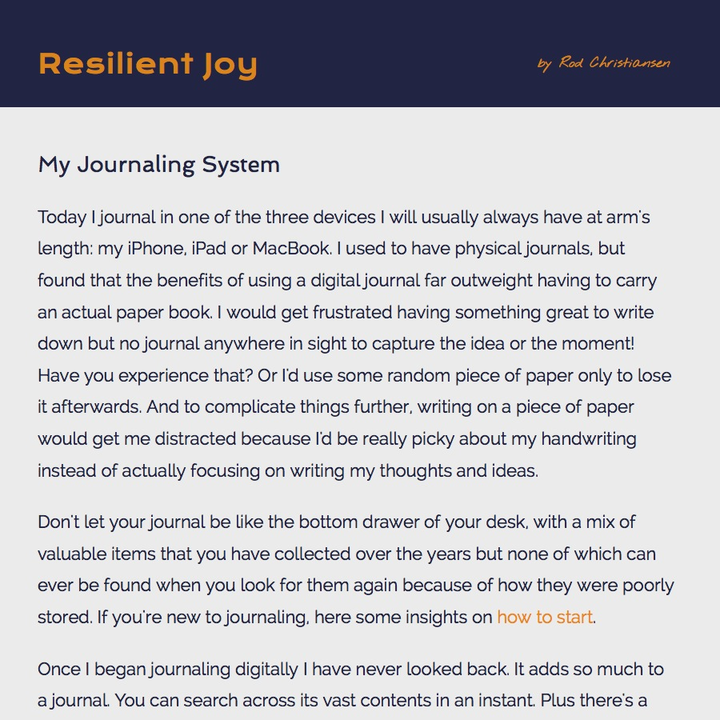

Resilient Joy - My Journal System
Perma🔗 (via @dayoneapp)

Rod Christiansen shares some great ideas on journaling, using one of my favorite tools - DayOne. Of particular note here is the list of tags he uses. Digital journaling, combined with tags makes for an awesomely powerful tool. Personally I really like writing in a journal. For those of you that have never done it (or have only done it with an audience (apart from yourself) in mind), I would highly recommend it. I'm not sure if it's the forced-introspection, or the liberating nature of getting thoughts out of your head, but I think most anybody could benefit from it.